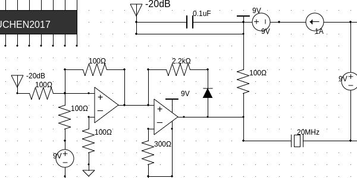

July 2017
A circuit drawing program that runs in the browser. It supports drawing basic passive and passive components including resistors, capacitors, diodes, OP-AMPs, integrated circuit chips, and more. This also supports saving and loading circuits using JSON.
Live demo